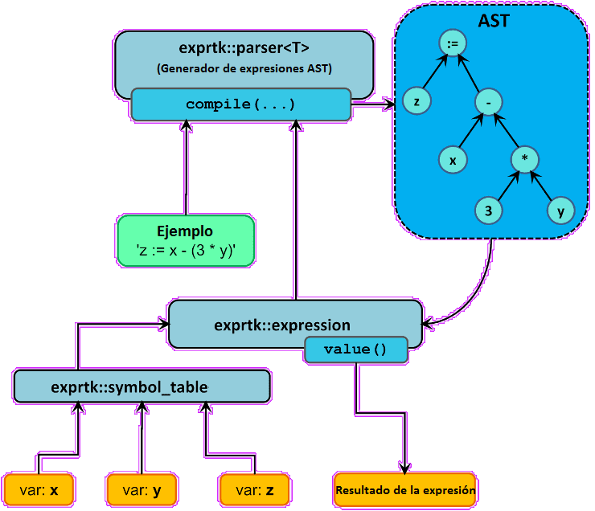

Calculadora Online
Calculadora Online
Radianes
Grados
$$x = {-b \pm \sqrt{b^2-4ac} \over{2a}}$$
Funcionalidades:
- Operadores Matemáticos (+, -, *, /, %, ^)
- Funciones (min, max, avg, sum, abs, ceil, floor, round, roundn, exp, log, log10, logn, pow, root, sqrt, clamp)
- Trigonometría (sin, cos, tan, acos, asin, atan, atan2, cosh, cot, csc, sec, sinh, tanh, d2r, r2d, d2g, g2d, hyp)
- Asignamiento (=)
- Variables y Constantes personalizadas
Diseño Básico:
| Componente |
Propósito |
| exprtk::symbol_table |
Almacenar constantes, variables y funciones definidas |
| exprtk::parser |
Generador de expressión AST |
| exprtk::expression |
Contenedor del AST usado para evaluar la expresión |

Algoritmo Shunting Yard
Árbol de Sintaxis Abstracta
C++ Exprtk
© 2018 — ALL RIGHTS RESERVED.